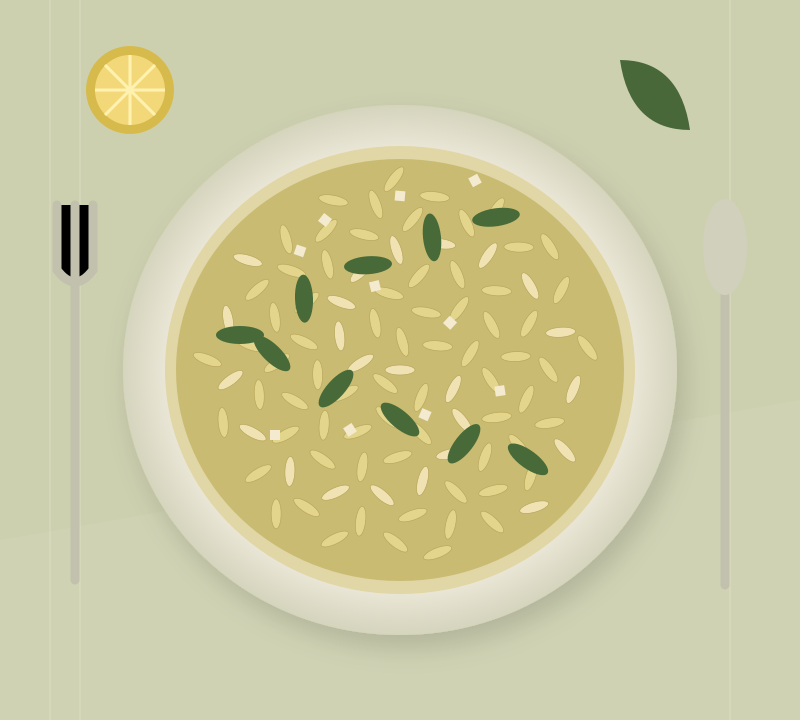
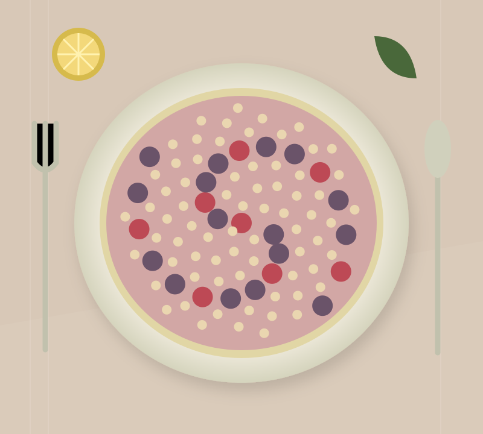
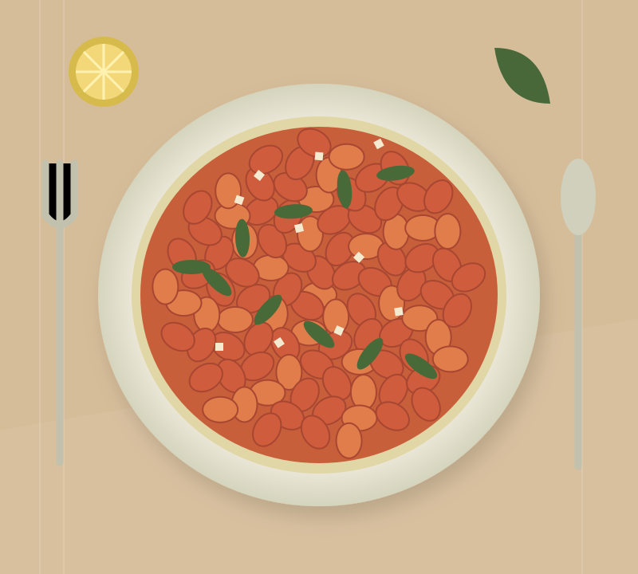
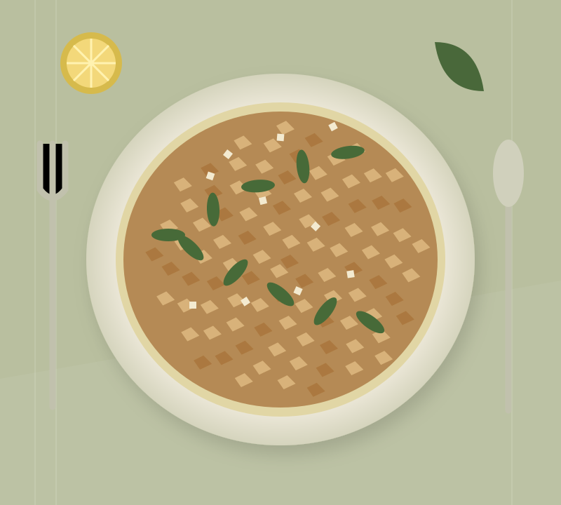

25 minutes active · Easy
From our kitchen to yours / Recipe of the weekA little lemon.
A little lemon.
A lot of comfort.
Lemony white bean orzo. One pan, a handful of good things and dinner is nearly there.
Original food illustration, not photography. Fictional recipe journal.

What sounds good today?
Fresh from the kitchen
No recipes match. Try a different course or cuisine.
The under-30-minute club.

10 minutes active · Easy

15 minutes active · Easy
Overnight oats require additional chilling time.
A taste of autumnThe oven’s on.
The oven’s on.
Come on in.
Little apple crumbles, warm with cinnamon. The kind of dessert that makes an ordinary evening feel like Sunday.

Around the table favourites.
Editor’s sample selection, not live popularity data.
Hello, I’m LucySimple food.
Simple food.
Good company.
Sunday Table is a fictional kitchen notebook for everyday cooks. These original sample recipes are designed for browsing and planning. Nutrition is estimated and the recipes have not been independently kitchen-tested.
Check ingredient labels for allergens and use your own judgement on seasoning and cooking times.
Write to the kitchen